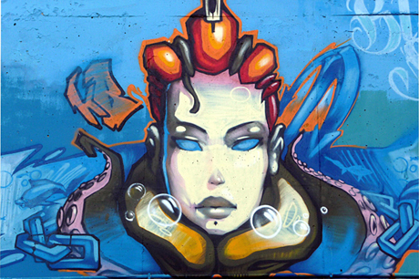

Art should comfort the disturbed and disturb the comfort
Banksy
l'actu du moment
Urban Art Fair 2020
Publié le 4 juin 2020
La cinquième édition aura lieu au Carreau du temple du 20 au 23 septembre 2023. L'occasion de faire de belles découvertes ou d'admirer les oeuvres d'artistes incontournables.
L’innovation de cette foire est la pluralité des événements qui en découle. Pour l’occasion, le Carreau du Temple réitère les projections cinématographiques autour du street art.
Cette année la foire se déplace aussi hors les murs avec la présentation inédite de l’exposition « Cannot be Bo(a)rdered » à découvrir en entrée libre du septembre au 7 novembre 2020 à l’Espace Commines. Une trentaine d’artistes venus de Singapour, Malaise et Indonésie on mis en place cette exposition autour de la culture du skate board.
Vente solidaire de Street Art
Publié le 17 mai 2023

A contexte exceptionnel, moyens exceptionnels. Emmaüs International a fait appel à la Galerie d’art en ligne KAZoART. Plus de 60 Street artistes se sont mobilisés, dont des artistes qui suivent le mouvement Emmaüs depuis de nombreuses années.
Artistes renommés ou émergents, tous ont accepté de faire don d’une ou plusieurs de leurs oeuvres au profit d’une grande Vente Solidaire de Street Art, qui se déroulera en ligne sur KAZoART, à compter du 12 juin 2023.
Les bénéfices de cette vente solidaire seront intégralement reversés au fonds d’urgence d’Emmaüs International, réparti entre les communautés d’Emmaüs du monde entier en fonction de leurs besoins.
Les interviews
Interview de Geleb
Publié le 12 juin 2023
Reconnaissable entre mille grâce à son univers hypnotique, le street artiste Geleb a bien voulu répondre à mes questions.
Influencé par ses origines tahitiennes, il y a vécu lorsqu'il était plus jeune. Ces graphs sont comme des souvenirs qui ont fait naître des formes et des motifs qui rappellent l'art primitif ou premier.
Interview de Joris Delacour
Publié le 30 mai 2023
Rencontre avec Joris, artiste peintre autodidacte et diplômé des Beaux Arts, vivant et travaillant à Paris.
Le jeune homme aime transmettre sa passion pour le graffiti. Il donne d'ailleurs des cours d’initiation, et fait aussi des prestations de live painting ou du team building pour des groupes. Il aime apprendre aux autres à s’exprimer et en a fait son métier.